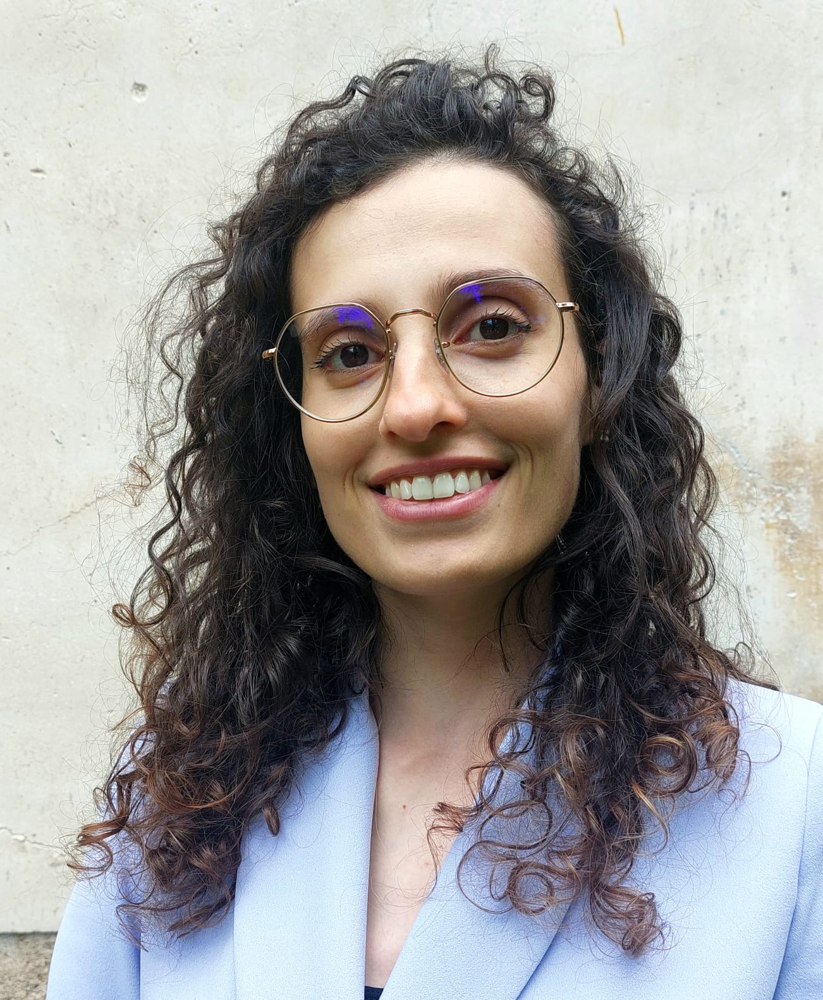

BITES 2026
Department of Biosciences and Territory, University of Molise.
About BITES 2026
BITES is the international summer school of the Department of Biosciences and Territory of the University of Molise.
BITES 2026 is the first edition of the school. It brings together internationally recognised lecturers and a community of Master's students, PhD students and early-career researchers for four immersive days of lectures, hands-on workshops and field activities in Termoli, on the Adriatic coast. This edition focuses on AI and data-driven methods for real-world complexity: how machine learning, computer vision, remote sensing and generative AI are transforming research across life sciences, environmental monitoring, urban analytics and structural engineering.
Why Join BITES 2026
- Explore how AI and ML methods are applied across domains
- Learn from international speakers from EMBL-EBI, Latitudo 40, CASA, TU Delft, UCL, UNIBAS, UNIMOL
- Present your research and get feedback from an international audience
- Earn academic credits (ECTS / CFU) recognised by the University of Molise
- Connect with PhD students and researchers in an informal setting
- Not least, enjoy four days in Termoli, a hidden gem on the Adriatic coast
Event Starts In:
Speakers

Schedule
August 25
August 26
August 27
August 28
Termoli

Università degli Studi del Molise
The Termoli campus of the University of Molise is renowned for its degree programs and research centers in tourism sciences and computer science. The summer school will be hosted in this modern facility, located steps away from the Adriatic coast.
View on Google Maps


Registration
Early Bird
Late
Daily
coffee break & lunch
🍽 The social dinner is not included in the registration fee and is available as an optional add-on ticket (€50 per person) for all registration types.
Please read the payment instructions before clicking to register.
Registration is confirmed only upon receipt of proof of payment. Please follow these steps:
- Choose your registration tier from the options above.
- Transfer the corresponding fee by bank transfer using the details below.
- Keep your receipt — you will need to enter the transaction reference number in the registration form. The organizing committee may also request it for verification.
- Fill in the registration form by clicking Register Now.
How to Reach Termoli
By Plane
The closest airports are Pescara (PSR) and Bari (BRI). Rome Fiumicino (FCO) is the main international hub, with Naples (NAP) as a southern alternative.
PSR From Pescara
Take the Pescara Airlink shuttle to Pescara Centrale, then a direct train to Termoli — about 1h from the airport.
BRI From Bari
Take the airport shuttle to Bari Centrale, then a direct train to Termoli — about 2h from the airport.
FCO From Rome
Take the Leonardo Express to Roma Termini, then a train to Termoli with one change — about 4h20 from the airport. FlixBus from Roma Tiburtina is a direct alternative.
NAP From Naples
Take the Alibus shuttle to Napoli Centrale, then a train to Termoli with a change at Foggia — about 4h30 from the airport.
By Train
Termoli is on the Adriatic line (Bologna–Lecce). Regionale, Intercity and Frecciarossa trains connect Termoli with Bologna, Ancona, Pescara, Bari, Foggia and other major cities. The station is a short walk from the city center.
By Car
Take the A14 Bologna–Taranto motorway and exit at Termoli. Follow signs to the city center. The A14 connects directly with all major Italian motorways from north and south. For live traffic updates: cciss.it.
By Bus
Termoli is well served by national bus lines such as FlixBus and MarinoBus, with affordable connections from many Italian cities. Direct services from Rome (Tiburtina) and other Adriatic cities are particularly convenient.
Hotels


Organizing Team
Anna Lisa Ferrara
Emanuela Guglielmi
